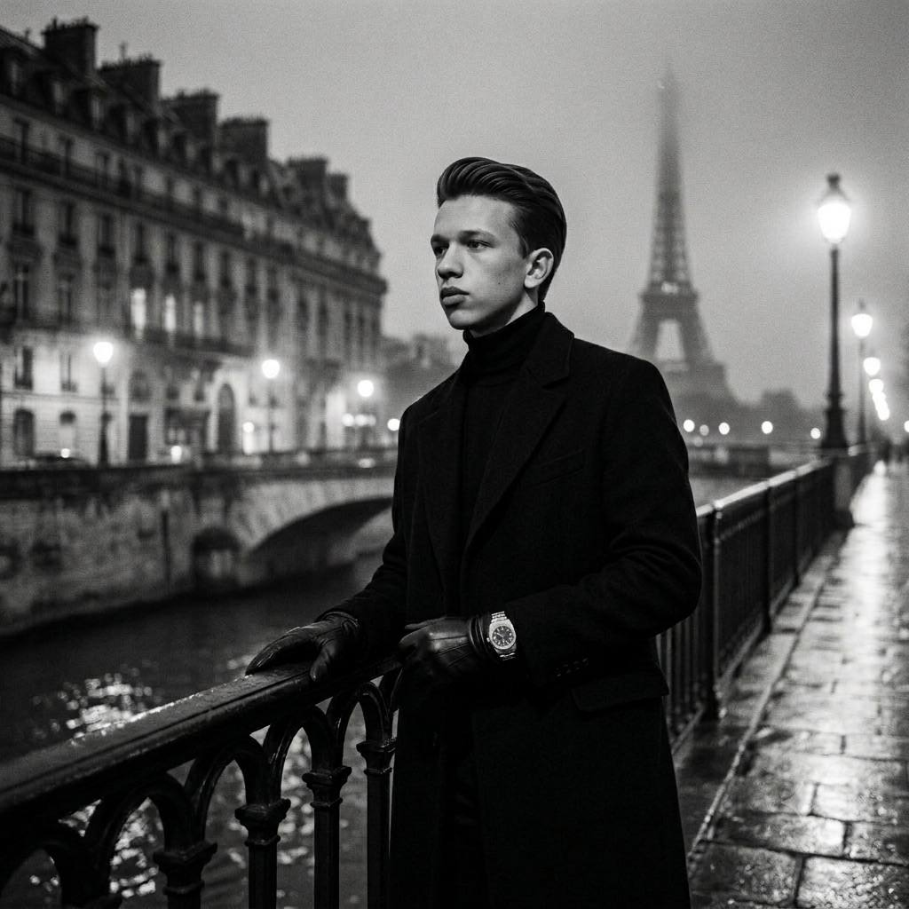

Shaxzod Rustamov
Telegram Kanalim
TELEGRAM PORTFOLIO
YouTube Channel
QIZIQISH UCHUN
Bog'lanish (Telegram)
Xizmatlar va Hamkorlik uchun
INSTAGRAM
FOTO VA VIDEO
Sahifa nusxasini olish
TIZIM: Havola nusxalandi!